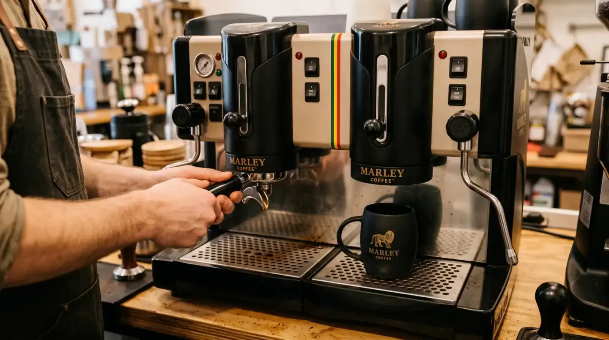

Guía · Marley Coffee Empresas
¿Qué máquina de café conviene según mis tazas diarias?

La cantidad diaria es un punto de partida. También importa cuántas tazas necesitas en la hora de mayor demanda, quién prepara el café, las bebidas que ofreces y el espacio disponible.
Cuatro datos que ayudan a elegir
- Volumen y hora punta: anota el consumo diario y cuánto se concentra en el momento de mayor demanda.
- Tipo de servicio: define si habrá una persona preparando bebidas o si será de autoservicio.
- Carta: identifica café solo, bebidas con leche u otras preparaciones.
- Instalación: mide el espacio y revisa agua, electricidad y limpieza que requiere el equipo.
Qué pedir en la ficha del equipo
Consulta capacidad recomendada, dimensiones, conexiones, limpieza y soporte. Una ficha técnica externa de Nespresso Professional muestra esos tipos de datos para uno de sus equipos; es solo una referencia de lectura y no corresponde al catálogo de Marley.
No existe una regla universal que asigne una máquina a un número fijo de tazas. La recomendación y el modelo disponible se confirman según tu operación.
Si ya tienes una máquina en mente
Parte con esa preferencia y revisa si su capacidad y funcionamiento corresponden a tu negocio. Si todavía no sabes cuál elegir, una orientación con estos datos puede ayudarte a comparar.
Supuestos y límites
| Capacidad | No se asigna un volumen a un modelo sin ficha vigente y validación del proveedor. |
|---|---|
| Referencia | La ficha Nespresso citada es externa y no representa el catálogo Marley. |
| Instalación | Conexiones, limpieza, espacio y soporte deben confirmarse para el local y el modelo. |
Preguntas frecuentes
¿Cuántas tazas por día debe preparar una máquina comercial?
No hay un número universal. Evalúa también la hora punta, el tipo de bebida, la forma de servicio y la ficha del modelo.
¿Qué debo medir antes de elegir una máquina?
Registra tazas diarias y en hora punta; revisa además carta, espacio, conexiones, limpieza y quién operará el equipo.
¿Las máquinas de esta guía son modelos Marley?
No. La ficha citada es una referencia técnica externa; disponibilidad, compatibilidad y recomendación deben confirmarse con Marley.
Fuentes y fecha de consulta
| Fuente | URL | Fecha de consulta |
|---|---|---|
| Nespresso Professional · ficha técnica de una máquina profesional (referencia externa) | https://www.nespresso.com/shared_res/mos/free_html/au/NespressoProfessional-FactSheet/Professional_Machine_Fact_Sheet_MOMENTO_Interactive_A4.pdf | Consultado el 10 de noviembre de 2026. |